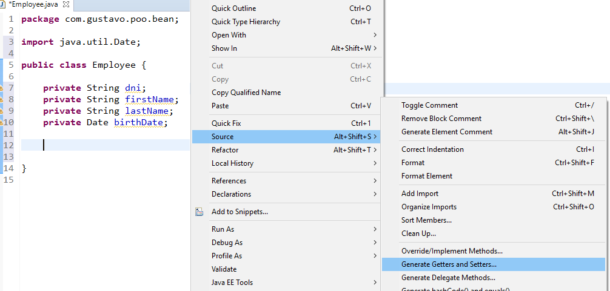
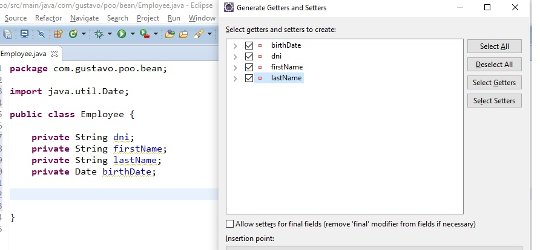
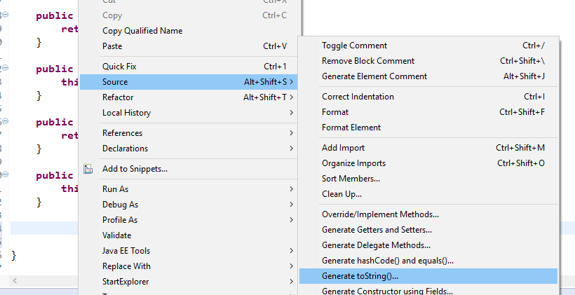
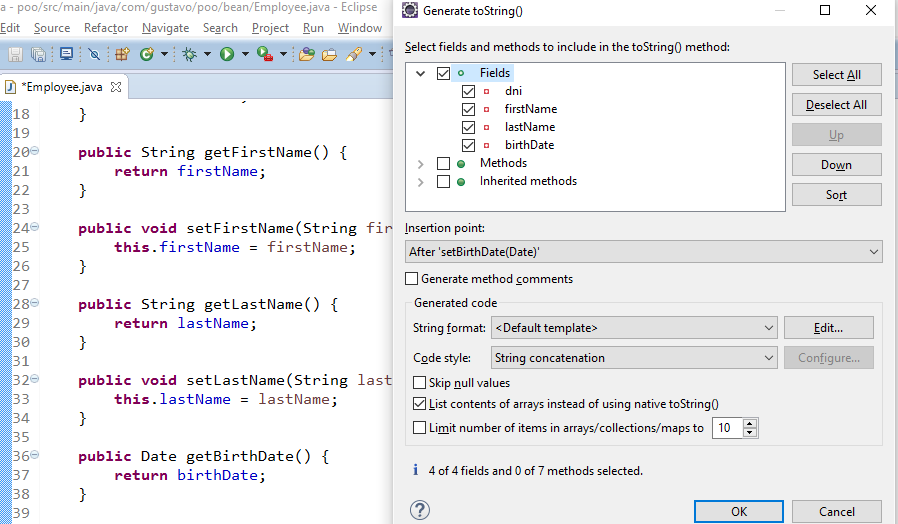

Programación Orientada a Objetos II
Composición
import java.util.Date;
public class Factura {
private Date fechaEmision;
private Item[] item;
// getters and setters
}
public class Item {
private Producto producto;
private double cantidad;
// getters and setters
}
public class Producto {
private long codigo;
private String descripcion;
private double precio;
// getters and setters
}
Herencia
// Cuando se tiene un método abstract la clase obligatoriamente debe ser declarada abstract
public abstract class FiguraGeometrica {
protected void dibujar() {
}
// abstract se define el método para que las subclases lo implementen.
public abstract double calcularArea();
}
// final aplicado a una clase hace que la clase no pueda ser heredada
public final class Triangulo extends FiguraGeometrica {
public double calcularArea() {
}
}
public class Cuadrado extends FiguraGeometrica {
// final aplicado a un método hace que el método no pueda ser sobreescrito en alguna subclase
protected final void dibujar() {
}
public double calcularArea() {
}
}
toString()
Toda clase en Java hereda implicitamente de la clase java.lang.Object, con lo cual toda clase de adquiere un conjunto de elementos que define Object, uno de ellos es el método toString() que usualmente se usa para dar una representación en String del objeto. nosotros podemos sobreescribir el método toString() para dar una representación más acorde al objeto que estamos creando.
class Empleado {
private String dni;
private String nombre;
public String toString() {
return "Empleado: [ dni: " + dni + ", nombre: " + nombre + "]";
}
}
Atajos de Eclipse
Generar getters y setters
Clic derecho en la vista de código > Source > Generate Getters and Setters...
Seleccionamos los campos que deseamos encapsular y clic en Ok
Generar toString()
Clic derecho en la vista de código > Source > Generate toString()...
Seleccionamos los campos que deseamos mostrar en el toString()
Interfaces
Generalmente usadas para definir las funcionalidades que tendrá la clase que implemente dicha interface, hasta antes de Java 8 las interfaces solo permitian el uso de métodos abstractos en su definición. Java 8 introduce el modificador default para implementar métodos en una interfaz lo que permite una especie de herencia múltiple en cuanto a métodos más no atributos.
public interface UserService {
void createUser(User user);
User getUserById(Long idUser);
User[] findAll();
default int generatePassword() {
return (int) (Math.random() * 1_000_000);
}
}
public class MyUserService implements UserService {
public void createUser(User user) {
}
public User getUserById(Long idUser) {
}
public User[] findAll() {
}
}
Polimorfismo
Polimorfismo se refiere a la característica de una referencia de comportarese de distintas formas. Lo veremos mejor con el siguiente ejemplo.
public class RandomGenerator {
int generateNumber() {
System.out.println("RandomGenerator");
return 0;
}
}
public class EvenRandomGenerator extends RandomGenerator {
@Override
int generateNumber() {
System.out.println("EvenRandomGenerator");
return ((int) (Math.random() * 1_000_000)) * 2;
}
}
public class OddRandomGenerator extends RandomGenerator {
@Override
int generateNumber() {
System.out.println("OddRandomGenerator");
return (((int) (Math.random() * 1_000_000)) * 2) + 1;
}
}
public class Main {
public static void main(String[] args) {
RandomGenerator generator = new RandomGenerator();
System.out.println(generator.generateNumber());
generator = new EvenRandomGenerator();
System.out.println(generator.generateNumber());
generator = new OddRandomGenerator();
System.out.println(generator.generateNumber());
}
}
Como vimos la misma referencia invoco métodos distintos en cada llamado. The JVM llama el método apropiado para el objeto que esta referenciando la variable en cada momento. No llama al método del tipo de la variable, sino al método del tipo del objeto. En los 3 casos el tipo de la variable es RandomGenerator, sin embargo el tipo del objeto en el primer caso es RandomGenerator, en el segundo es EvenRandomGenerator y en el tercero OddRandomGenerator. Este comportamiento se conoce como Virtual method invocation y demuestra así el uso del polimorfismo en el lenguaje Java.
System.exit(0);